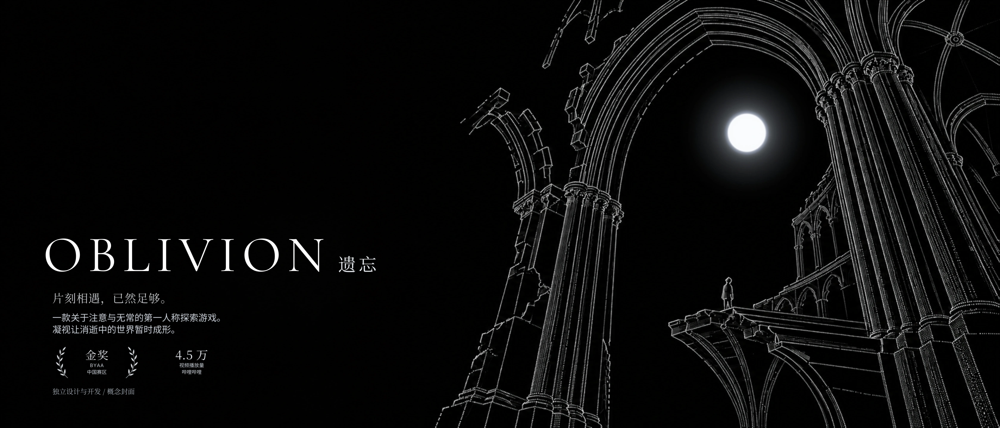
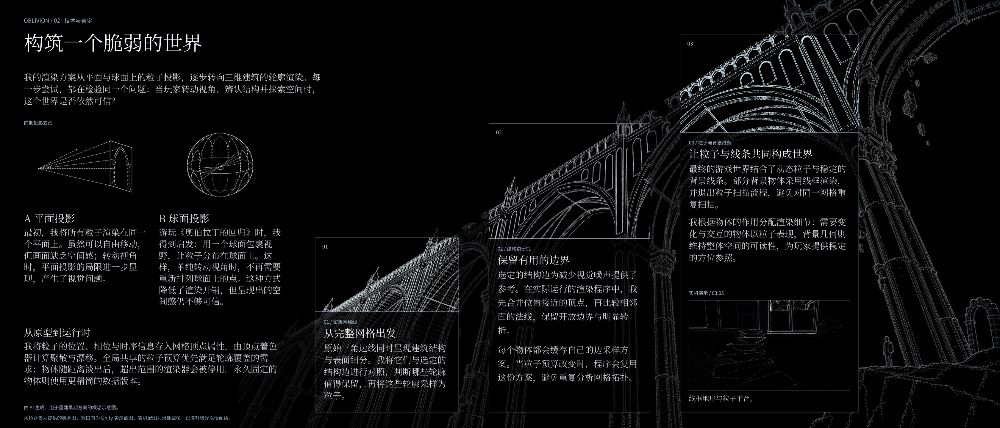
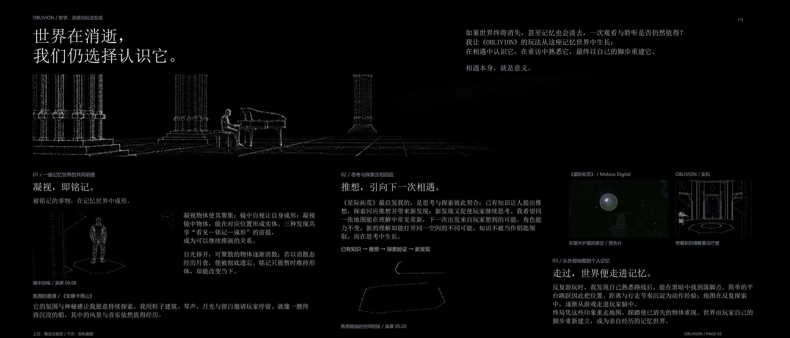
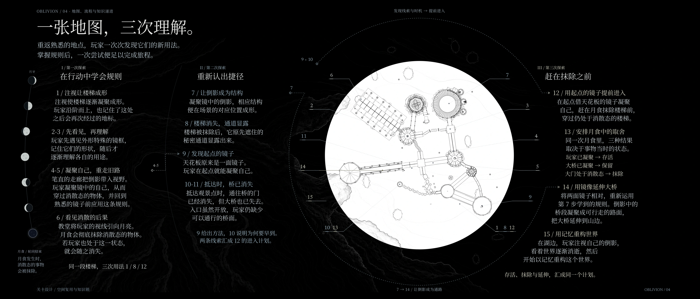
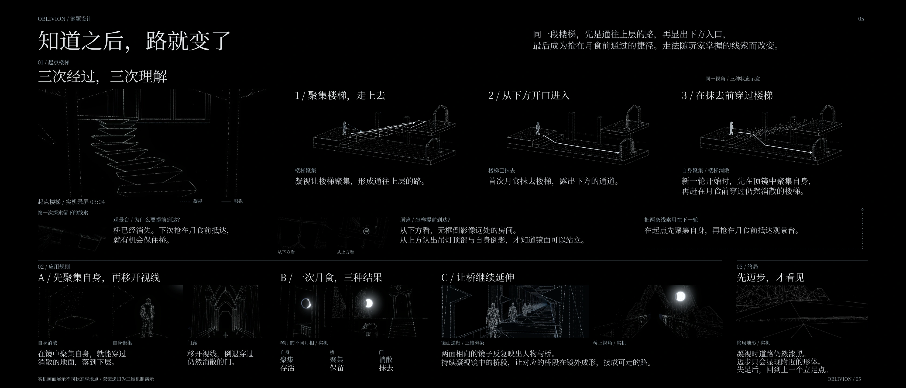
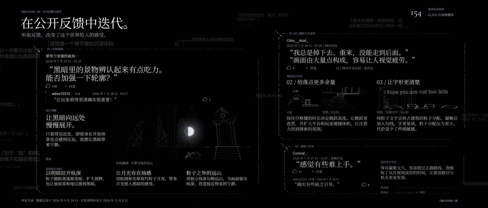

01 / 片刻相遇，已然足够。
OBLIVION 遗忘
一款关于注意与无常的第一人称探索游戏。凝视让消逝中的世界暂时成形。

独立设计与开发 · BYAA 中国赛区金奖 · 哔哩哔哩 4.5 万次视频播放
02 / 技术与美学
构筑一个脆弱的世界
粒子渲染从平面与球面投影逐步转向三维建筑的轮廓。每次尝试都在检验转动视角时，玩家是否还能辨认结构、在空间里找到方向。

从投影到三维轮廓
平面投影转动时容易暴露平面感。受到《奥伯拉丁的回归》启发，球面投影减少了转动视角时重新排列粒子的开销，随后以三维建筑轮廓解决空间可信度的问题。
让粒子与线条共存
对照完整网格，筛出开放边界与明显转折，并缓存每个物体的边采样方案。顶点着色器负责粒子的聚散与漂移。稳定的远景线条保留方位，粒子用在会变化和可交互的物体上。
线框地形与粒子平台 · 9 秒实机录像
03 / 玩法与哲学
世界在消逝，我们仍选择认识它。
凝视，即铭记。被铭记的事物，在记忆世界中成形。就算世界和记忆终将消逝，相遇本身依然有意义。

凝视与遗忘
凝视物体使它聚集，镜中自视使自身成形，凝视镜中物体则生成对应物。移开视线，易变的事物会消散。月食抹去届时仍处于消散状态的事物。
推想，走向下一次相遇
《星际拓荒》启发我让思考和探索相互推进。新知识引出假设，探索带来发现，发现再催生下一个想法。粒子建筑、钢琴、月光和黑暗让玩家愿意在途中驻足。
用脚步重建记忆
重访让玩家记住落脚点、距离和节奏。终局中，玩家凭记忆走过已经消失的地图，脚下的事物随每一步重新成形。
04 / 地图与知识递进
一张地图，三次理解。
重返熟悉的地点，玩家会发现它们的新用途。掌握规则后，一次探索就能走完整条路线。

01–06 · 在行动中学会规则
凝视楼梯并登高，在沿途见到用途尚不明朗的镜框。长廊让玩家看见倒影，学会以聚集的身体穿过消散物体。大教堂指向月亮，首次月食抹去所有仍处于消散状态的事物。
07–11 · 重新认出捷径
凝视倒影可以在现实空间生成对应物。楼梯被抹去后露出下方通道，起点顶镜则能让玩家提早聚集自身。观景台的门已经消失，桥也已被抹去，这才显出为何必须提早到达。
12–15 · 赶在抹除之前
在起点利用顶镜聚集身体，穿过仍处于消散状态的楼梯。月食前保住自身与桥，让门维持消散。相向镜面延伸桥段，越过山体后抵达湖面，开始凭记忆重建世界。
05 / 关键谜题设计与终局
知道之后，路就变了
同一段楼梯先通往上层，再显出下方入口，最后成为抢在月食前通过的捷径。每条走法都取决于玩家已经知道什么。

同一座楼梯的三种走法
先凝视使楼梯成形，再沿它登高。月食抹去楼梯后，从露出的下方开口通过。下一轮借起点顶镜先聚集自身，就能直接穿过消散的楼梯，在月食前抵达观景台。
一次月食，三种结果
在镜中凝聚自身，再移开视线，倒退通过消散的门。让自身和桥保持聚集，门保持消散，同一次月食便留下身体与桥，抹去阻路的门。
双镜延伸道路，脚步唤回世界
两面相对的镜子让桥段反复映照，凝视镜中桥段便能让对应桥段成形。终局里凝视时道路仍暗，迈步才让近处的形体显现。
双镜长路 · 三维机制演示
06 / 公开反馈与改进
在公开反馈中迭代。
三条公开讨论对应四项改进。这里并列呈现当时的评论、可查的历史回复，以及后来记录的设计决定。

让黑暗向远处慢慢展开
视频观众提到黑暗中轮廓难辨。开发中扩展了粒子的可见范围并让其随距离变暗，用月面贴图与光晕建立月光感，再以独立线条保留远山轮廓。
给落点更多余量
一位网页版试玩者提到反复掉落和重来。跳高随空格按住的时长变化，平台和玩家的碰撞体积也扩大了，落点由此更宽容。
让字形更清楚
同一条试玩反馈也提到长时间观看点状画面容易疲劳。开发中让文字在粒子凝聚后出现勾线，提高可读性，也为周围建筑保留更多粒子。
缩短凝聚等待
一位观众从视频感到游戏难上手，作者当时回复说引导不足。后续开发缩短了注视到凝聚的时间，让看见的路径和机关更容易及时显现。
反馈页采用 2026 年 9 月 24 日记录的数据。154 条评论及回复，41,833 次视频播放。